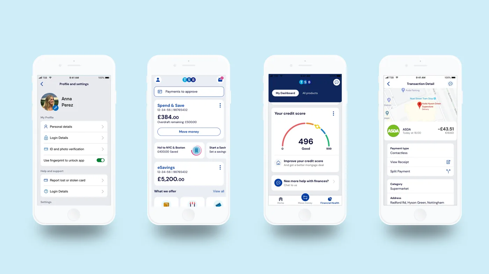
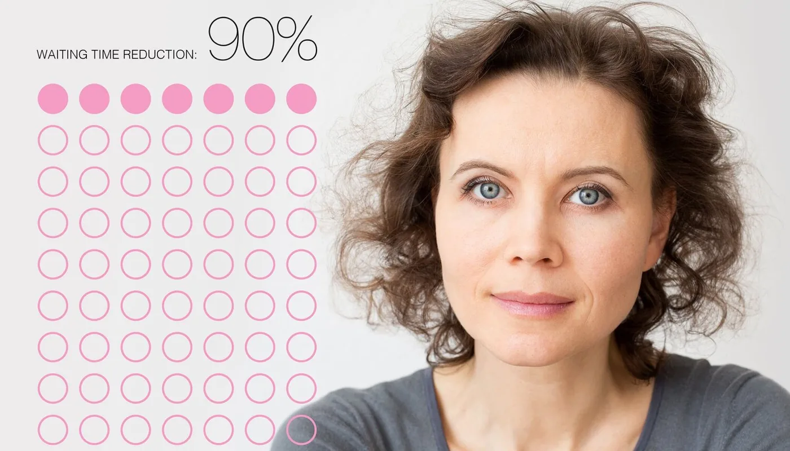
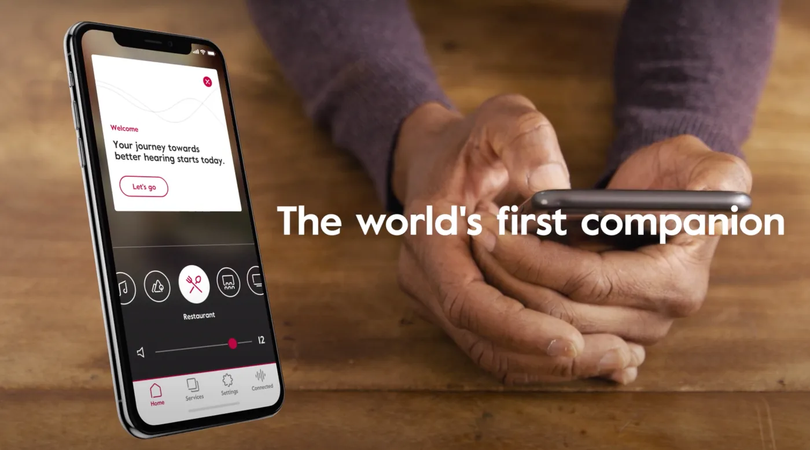
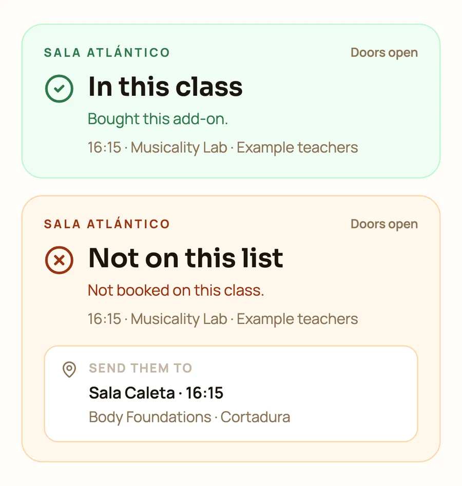
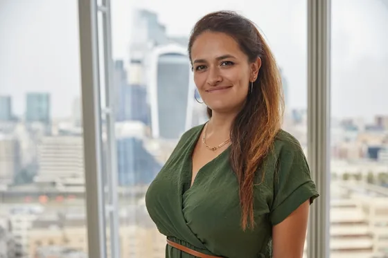
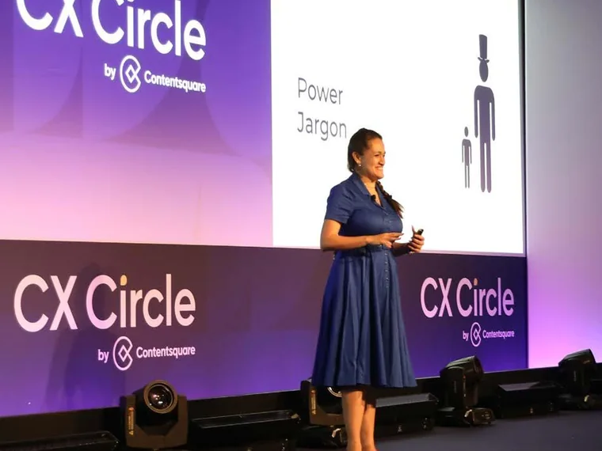
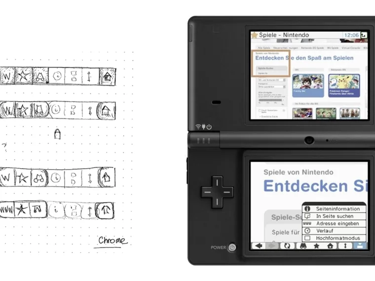
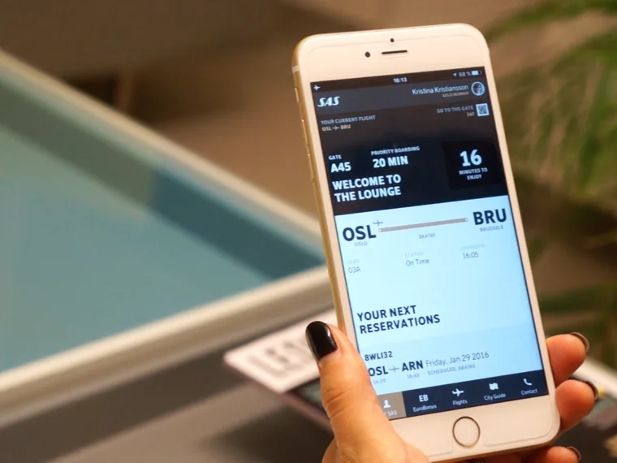

I started as a developer, led design and customer experience at two banks, and now I design and ship AI products myself in React, TypeScript, Next.js and Supabase.
Open to permanent, contract and founding roles. Design engineer, founding designer, product designer. London hybrid or UK remote.
Design and product leadership in banking, healthcare and consumer tech, before I went back to code.

I joined as the platform migration locked customers out, led the design of the response, and built the design function and design system from zero.

Women waited up to twelve weeks to find out whether they had breast cancer. We redesigned the pathway with the clinicians who run it.

The brief was a control app for a hearing aid. The research said the real problem was the first weeks of wearing one, so we designed a companion instead.
A design system with accessibility in CI. Fifteen colour roles, three brands, one component library. Every pull request checks 86 colour pairs: each text colour on each background it sits on, in every palette. There were real failures behind it: our own brand gold reached only 2.6:1 as link text, and one artist’s grey sat between 3.6 and 4.1:1. Both are fixed, and the tests stop them coming back. The one gap left, an artist’s faint grey at 3.5:1, is pinned so it can only improve.
Claude in production. Expert feedback is written in Spanish, and most of the dancers reading it are not Spanish speakers. Now each one reads their review in their own language, translated on demand, and 325 reviews cost under one euro. Claude also turns class discussions into a digest for each artist.
A production platform, solo. Bachata Connect runs on Next.js and Supabase with row level security, in strict TypeScript. Every pull request has to pass a typecheck, and Playwright drives the critical journeys end to end. Python scripts load spreadsheets into Postgres, merge duplicate records and keep ticketing and video in sync.
The main repository is private while it holds participant data. The design system is public: the code and a live demo, with the contrast test running in CI. I am happy to walk through the main codebase live.
// every text colour, on every ground, in every palette
describe.each(palettes)('palette "%s"', (name, t) => {
for (const role of TEXT_ROLES) {
it(`${role} reads everywhere (≥ 4.5:1)`, () => {
const worst = Math.min(
...GROUNDS.map((bg) => contrastRatio(t[role], t[bg]))
)
expect(worst).toBeGreaterThanOrEqual(4.5)
})
}
})The accessibility test that runs on every pull request. If a colour fails, the change cannot ship.

Operational logic has two states, and the unhappy one still sends the person somewhere. Example data.

I am from Colombia, spent sixteen years in Norway and now live in London. My first job was as a developer at Opera Software, where I was employee 69 and worked on browsers for the Nintendo Wii and DS and for Motorola phones. On the DSi I was the interaction designer: smooth scrolling, transitions that felt like a game, and pages you could browse with one hand. I have cared about how an interface feels in the hand ever since.
I moved from code into design, then into customer experience, and spent the last decade in financial services. Most of my work has been with people at difficult moments: borrowers in trouble, patients waiting for a diagnosis, older people adjusting to a hearing aid. That is where behaviour matters more than features.
I’ve led teams at two banks. I went back to building because AI has made shipping fast, and the hard part now is deciding what’s worth shipping. I have just finished an Executive MBA at Warwick Business School, where my research looked at why people avoid dealing with their money. I speak Spanish, English, Italian and Norwegian.

On why NPS measures the bank's success rather than the customer's, why loyalty is not a 3% cashback offer, and why a bank's superpower is its people rather than its technology. Contentsquare wrote the talk up as a four-page feature in CX Circle magazine.

I was the interaction designer on the browser Opera built with Nintendo, working with their engineers in Tokyo. Two screens, a stylus and a games console: navigate on the bottom, read on the top, swap at any time, and a one-handed column view. Nintendo wanted it to feel fun and snappy, like a game, so we used hardware acceleration for the scrolling and the transitions.

Redesigning the loyalty experience for Scandinavian Airlines, so points, status and rewards were something members could actually understand and use across the journey.